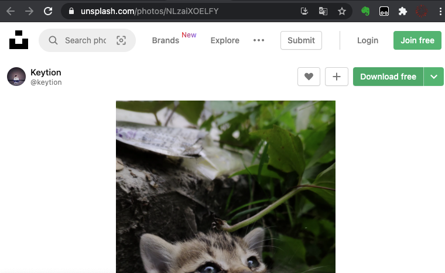
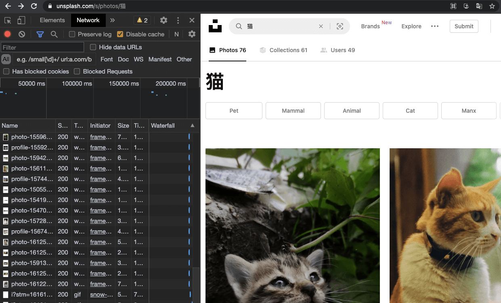

- 00 导读 入门Python的必备知识.md.html
- 00 开篇词 重复工作这么多，怎样才能提高工作效率？.md.html
- 01 拆分与合并：如何快速地批量处理内容相似的Excel？.md.html
- 02 善用Python扩展库：如何批量合并多个文档？.md.html
- 03 图片转文字：如何提高识别准确率？.md.html
- 04 函数与字典：如何实现多次替换.md.html
- 05 图像处理库：如何实现长图拼接？.md.html
- 06 jieba分词：如何基于感情色彩进行单词数量统计？.md.html
- 07 快速读写文件：如何实现跨文件的字数统计？.md.html
- 08 正则表达式：如何提高搜索内容的精确度？.md.html
- 09 扩展搜索：如何快速找到想要的文件？.md.html
- 10 按指定顺序给词语排序，提高查找效率.md.html
- 11 通过程序并行计算，避免CPU资源浪费.md.html
- 12 文本处理函数：三招解决数据对齐问题.md.html
- 13 Excel插件：如何扩展Excel的基本功能？.md.html
- 14 VBA脚本编程：如何扩展Excel，实现文件的批量打印？.md.html
- 15 PowerShell脚本：如何实现文件批量处理的自动化？.md.html
- 16 循环与文件目录管理：如何实现文件的批量重命名？.md.html
- 17 不同操作系统下，如何通过网络同步文件？.md.html
- 18 http库：如何批量下载在线内容，解放鼠标（上）？.md.html
- 19 http库：如何批量下载在线内容，解放鼠标（下）？.md.html
- 20 不同文件混在一起，怎么快速分类？.md.html
- 21 SQLite文本数据库：如何进行数据管理（上）？.md.html
- 22 SQLite文本数据库：如何进行数据管理（下）？.md.html
- 23 怎么用数据透视表更直观地展示汇报成果？.md.html
- 24 条形、饼状、柱状图最适合用在什么场景下？.md.html
- 25 图表库：想要生成动态图表，用Echarts就够了.md.html
- 26 快速提取图片中的色块，模仿一张大师的照片.md.html
- 27 zipfile压缩库：如何给数据压缩&加密备份？.md.html
- 28 Celery库：让计算机定时执行任务，解放人力.md.html
- 29 网络和邮件库：定时收发邮件，减少手动操作.md.html
- 30 怎么快速把任意文件格式转成PDF，并批量加水印？.md.html
- 春节特别放送1 实体水果店转线上销售的数据统计问题.md.html
- 春节特别放送2 用自顶至底的思路解决数据统计问题.md.html
- 春节特别放送3 揭晓项目作业的答案.md.html
- 结束语 和我一起成为10X效率职场人.md.html
- 捐赠
18 http库：如何批量下载在线内容，解放鼠标（上）？
你好，我是尹会生。
我在前段时间遇到了下载大量图片的需求。具体来说，是在我训练AI识别猫时，必须要在电脑中存储大量猫的图片。但搜索到的图片都在网页中，我就需要先把它们一个个手动下载下来，再保存，然后才能进行后续的工作。
而且，随着我对AI训练工作的日益增多，这类需求会越来越丰富，我不仅要下载猫的图片，还要下载大量其他各种动物的图片。相信类似这种批量下载网页中的图片的需求，你在工作中会经常遇到。而这类需求，刚好能够使用Python的“requests-html”库实现批量下载，提高我们的工作效率。
因此呢，这节课我就以搜索到的猫的图片为例，给你讲解一下，我是怎么来批量下载图片的。
批量下载图片的准备工作
我把实现图片自动化批量下载的过程，拆分成四段难度逐渐递增的代码。这四段代码分别实现的是以下四个功能：
- 访问HTTP服务器，得到搜索结果的整个网页；
- 在访问服务器之后下载一张图片；
- 找到多张图片的相似地址；
- 提取相似地址，下载多张图片。
前两个功能，是批量下载图片的准备工作和前提。掌握了这两个功能，那么批量下载图片实现起来就容易多了。所以接下来，我们先来学习这两项准备工作。
访问HTTP服务端的资源
我们从难度最低的一段代码开始，怎么通过访问HTTP服务器，从而得到猫的搜索结果的整个网页。
访问HTTP服务器，我需要使用Python的第三方库requests-html库来实现。虽然Python在标准库中也自带了访问服务器urllib库，但它的实现代码不够简洁，所以我一般数情况下会使用requests-html库替代它，来进行HTTP服务器的访问。
使用reqeusts-html库，你先需要通过“pip”来安装，再通过get()方法访问HTTP服务器。
安装requests-html库的方法，和我们上一讲安装flask库是一样的。这里我强调一下，在Python中，绝大多数的第三方库，它们的名称和安装包的名称是相同的，所以除了特殊的安装方法外，像这种通用的安装方法，我就不会每次都重复贴出来了。reqeusts库的安装方法，代码如下：
pip3 install requests-html
在命令行执行后，requests-html库就安装成功了。接下来，我们就使用它的get()方法去请求HTTP服务器，而得到的返回数据，就是网页的代码。
相信你还记得在上一讲中，我介绍了两种常见的HTTP服务端请求的方式，分别是“GET”和“POST”。requests-html库就是使用了同名函数实现的“GET”方式访问。
那么接下来，我将使用reqeusts库来访问一个无版权的图片网站，并得到网页的源代码。我把代码写出来，供你参考。
from requests_html import HTMLSession
# URL
name = "猫"
url = f"https://unsplash.com/s/photos/{name}"
# 启动
session = HTMLSession()
# GET请求
result = session.get(url)
# 结果
print(result.status_code)
print(result.html.html)
在这段代码中，我用requests-html代替浏览器来作为HTTP客户端，通过“session.get()”函数，向upsplash网站提供的HTTPS服务器发起“GET”请求。发送请求后，“result”变量会得到HTTP服务端响应的结果，即网页的源代码。
你肯定会有疑问，为什么我要用requests-html来代替浏览器呢？原因就在于，浏览器得到了网页内容后，如果你想再通过网页下载图片，还需要通过鼠标和网页的交互。这就会带来一个新的问题：交互式命令是不能进行图片的自动化下载的。也就是说，我们必须让交互操作变成非交互操作，才能进行批量下载图片。
总之呢，在这段代码中，我使用了requests-html代替浏览器实现了一次完整的网址的访问，这一过程为后续的自动化下载打下了坚实的基础。
而在这次网址的访问中，最核心的就是发起“GET”请求了。我把这次完整的“GET”请求拆分成了四个步骤。
其中前两个步骤是准备工作。准备工作是指在发送正式的数据之前，需要确定你需要向哪一个互联网当中的服务器发起请求，以及尝试和他建立连接，判断是否能够正常访问。
这就像你跟其他人打电话一样，你要确定你输入的电话号码是正确的，而且在拨打电话以后，还可以根据电话那个提示音，知道对方的电话是否处于可接通状态。
那后两步呢，就是在这个基础上和对方正式开始通话，但是他和打电话的区别是 HTTP协议会采用一问一答的形式，也就是发送一次请求会得到一次结果，不发请求也不会得到任何结果。接下来我们就来详细看一下这4个步骤。
第一步，设置请求的URL。
通过使用requests-html请求该网站，你会发现请求的大部分地址都是固定的，只有搜索的关键字会随着搜索的内容不同而发生变化。
所以我把搜索的关键字单独提取出来，放在一个字符串“name”中，当你需要更改搜索的关键字时，直接修改“name”变量就可以了。而其他在请求过程中没有发生变化的字符串，则放在url字符串中。与此同时，我还把url设置为“f-string”，方便我进行变量“name”的替换。
这一步是比较简单的，不过我在里面花了点小心思。仔细观察字符串，像字符串中只有某几个位置发生了变化，那么其余的部分就是重复的逻辑。针对这种重复的逻辑，可以被定义成变量来重复使用，减少重复工作。
还有我们以前接触过的，比如把文件目录和文件名拼接后，会形成一个很长的完整文件名。当文件名被多个函数重复使用时，你就不必每次都执行拼接，而是可以在拼接后被定义成变量来重复使用。
我补充这一点是想告诉你，你在写代码时也要多观察代码中哪些部分是重复的逻辑，这些重复的逻辑往往都可以使用变量来进行定义。一个小小的技巧，有时候就能给你的重复工作带来非常大的效率提升。
第二步，启动一个会话。
会话是HTTP协议中的一个概念。当你的客户端和服务端建立了连接时，我们就称一个会话建立成功了。它就像你和你的小伙伴使用微信进行视频，当对方接通视频的那一刻，就建立了一个新的会话。
在这段代码中，我使用了“HTMLSession”类初始化了一个叫做“session”的会话，用来后续向HTTP服务端继续发送请求。
第三步，发送“GET”请求。
建立会话之后，就要可以开始传输数据了。在这段代码中，我使用了get()函数把数据包装成标准的HTTP协议，然后向我在第一步定义的“URL”发起“GET”方式请求。
第四步，得到返回结果。
请求发送完成之后，“result“变量会自动得到服务器的结果，无论结果是成功还是失败，“result”变量都会得到返回的状态码以及数据。
所以在这一步，我们需要着重掌握怎么判断服务器返回的是成功还是失败的结果。我使用了“result.status_code”来得到返回的状态码。状态码是HTTP协议规定的标准，正确返回为200 ，其他返回你可以参考维基百科。
根据不同的状态码，你能判断网页返回的状态，并进行后续处理。比如我们经常使用状态码“200”确认网页是正确返回了内容，这意味着我得到“200”这个返回码之后，就可以继续处理网页数据了。
如果返回码是“4xx或5xx”，说明出现了请求过程的客户端或者服务端错误，HTTP客户端并没有得到网页的内容，这时候你就必须停止程序后续的逻辑，并向执行者提示错误信息。具体的判断方法就是我们的老朋友if语句了。
在这段代码中，我们得到了状态码200，那接下来我就使用“result.html.html”，得到了完整的网页源代码。
这四个步骤，就是使用“requests-html”库得到指定网页源代码的完整流程。接下来就要分析网站的行为，来下载单张图片。
使用requests-html下载一张图片
下载单张图片是图片批量下载的基础。为什么要这么说呢？因为我们可以通过观察一张图片的下载行为，把浏览器的下载操作转换成Python的代码，这样就可以循环批量下载图片了。而观察单张图片的下载行为，换句话说就是用Python来模拟浏览器。
具体思路是这样的：在使用Python按照浏览器的行为进行下载后，我们可以对服务端的HTML代码进行分析，从而得到多个图片在服务端存储的代码逻辑，之后就可以利用循环批量下载图片了。那接下来我就用例子带着你来学习一下。
使用浏览器下载一张图片的时候，当你把鼠标移动到下载按钮，你会发现它是在访问图片的URL后面增加了一串“download”字符。
我用一张图片的访问和下载给你举个例子，例如下载下面这张图片：

在你清楚浏览器是如何下载一张图片的之后，我们就可以使用“requests-html”下载单张图片了。下载单张图片的完整代码如下：
from requests_html import HTMLSession
# URL
url = "https://unsplash.com/photos/NLzaiXOELFY/download"
# 启动
session = HTMLSession()
# GET请求
result = session.get(url)
# 结果
print(result.status_code)
# 保存图片
with open("one.jpg", "wb") as f:
f.write(result.content)
这段代码中的保存文件功能是我想重点为你讲解的内容。在访问网页得到图片的下载地址的基础上，我增加了“with open” 语句，打开了一个文件，并以“wb”作为参数，实现文件的二进制写入。
由于图片是由“01010… …”形式的二进制组成的，所以写入和下载都必须使用二进制方式实现。可以看到，在设置文件写入方式的时候，我增加了b参数，让文件以二进制方式写入文件，这样我们就能从服务器获得的图片内容的同时，也以二进制方式得到了返回结果的修改。
接着，我把“result.html”改成了“result.content”，使用二进制方式来获取图片内容。通过这样的方式，最终就把文件保存成“one.jpg”了。当你运行脚本后，在运行脚本的目录下就会产生一个“one.jpg”的图片。
这就是完整的使用“requests-html”下载单个图片的过程。
如何批量下载图片
请求网页和下载图片是实现批量下载的基础，这两部分已经使用Python自动完成了，接下来就是如何将它们组合起来。我来组合它们的思路是这样的：
首先，你要把它们当作两个独立的功能，找出两个功能的输入和输出是什么。
请求网页的输入是一个即将要请求的URL地址，输出则是网页源代码。那下载图片的输入输出是什么呢？我们以下载单个图片为例，下载图片的输入是图片的地址，执行下载图片的功能之后你会得到保存在硬盘上面的一张图片。因此，下载图片的输入是图片地址，输出是图片文件。
接下来，需要从前一个功能的输出找到后一个功能输入需要的数据。
这里的前后是指执行顺序的前后，那么从请求网页得到的网页源代码中找到下载图片的地址是关联这两个功能最关键的技术点。而在编码的时候，我会将这两个功能编写为两个函数，函数的执行结果就是功能的输出，而函数的参数实现的就是功能的输入，通过前一个函数的输出和后一个函数的参数就能实现它们之间的功能连接了。
最后是找规律。尽可能地找到多张图片之间的HTML代码的规律，从而实现批量下载。
根据上面我提到的组合两个函数的思路，你不难发现，要想实现批量下载图片函数，必须先得到每个图片的下载地址，而下载地址会出现在请求网页的函数执行结果中。接下来我们就从请求网页函数的执行结果–网页的HTML代码入手，寻找图片的下载地址，并从这些下载地址中寻找规律，批量提取下载地址。
使用XPath，匹配多张图片下载地址
想要找到图片的下载地址以及它们的规律，最直观的办法就是通过浏览器的调试界面，观察它们的代码。
你可以使用浏览器访问 “https://unsplash.com/s/photos/猫” URL后，再通过浏览器的调试功能，打开调试界面。我以最流行的Chrome浏览器为例，它的调试窗口打开快捷键是“F12”，打开调试界面后的截图如下，供你参考：

截图左侧就是调试页面，截图的右侧是网页的内容，你可以通过截图左上角的“选择元素按钮”-
 -
点击图片，左侧的调试界面会自动定位到图片对应的HTML代码。而你向上查找，会发现图片下方的“”标签的“href”属性，就记录了图片ID和下载地址。
-
点击图片，左侧的调试界面会自动定位到图片对应的HTML代码。而你向上查找，会发现图片下方的“”标签的“href”属性，就记录了图片ID和下载地址。
这里我有必要为你介绍一下HTML的标。你在网页上看到的每个元素，都是由不同类型的标签组成的。
例如图片使用的是“”标签，超链接使用的是“”标签。每个标签还使用了相应的属性，来记录该标签的具体信息。比如把一个人作为标签，他可以有性别、身高、年龄等属性。“”标签的“href”属性就记录了超链接的地址，我们可以使用超链接地址来完成图片的批量下载。
那用什么方法能一次性找到链接呢？聪明的你一定想到了我们在第8讲学过的正则表达式。正则表达式是分析网页的常用工具之一，不过还有一种比正则表达式更方便的网页内容搜索工具，那就是XPath。我们可以使用XPath来找到超链接。
如果你对使用正则表达式分析网页也感兴趣，你可以把它跟XPath进行对比，选择一个自己顺手的工具，这也是提升工作效率的技巧之一。
我先把XPath查找的方法和结果写在下面的代码中， 然后再为你分析XPath的用法。
print(result.html.xpath('//figure[@itemprop="image"]//a[@rel="nofollow"]/@href'))
# ['https://unsplash.com/photos/NLzaiXOELFY/download?force=true',
# 'https://unsplash.com/photos/3JyEfhb8Zgo/download?force=true',
# 'https://unsplash.com/photos/4Y6UYds0cIo/download?force=true',
# ... ...
# ]
在这段代码中，使用result.html.xpath()函数就能实现XPath查找网页的功能。XPath查找网页时也有它自己的语法，我在这里使用了路径、标签、属性三个功能。我来依次带你学习一下它们的用途。
首先是路径，HTML的整体结构是由头部标签“”和主体标签“”组成的，而网页的内容是在主体标签下逐层编写的，它的结构如下：
<head>
</head>
<body>
<div num=1>
<figure itemprop="image">
... ...
<div num=2>
... ...
<a rel="nofollow" href=http://...>
... ...
</div>
</figure>
</div>
</body>
以上面的结构为例，如果网页内容简单，你可以像使用windows的路径一样，使用“/body/div/fugure”方式搜索到“figure”标签。但是当匹配路径超过3个时，把路径逐个写在XPath搜索表达式中不太容易，那我们就一般使用模糊路径来搜索“//”。比如要搜索一个
标签，就可以使用“//
”的方式。
接着是标签。我在xpath()函数中，使用了figure和a标签。“finger”是自定义标签，“a”是超链接的标签，它们和路径组成了下面这行代码的形式：
xpath('//figure//a')
这一条XPath的功能是从任意位置开始搜索“figure”标签，并在它下面任意一级目录中找到“a”标签。这显然不符合我们只提取图片下载地址的要求，因此我们要通过属性增加这两个标签的限定条件。
接下来，我为“figure”标签增加了限定条件，要求它的属性和属性的值，必须和xpath()函数搜索的属性和值完全相同。
xpath()的匹配规则中要求“figure”标签必须包含“itemprop”属性，且这一属性的值是“image”，为“a”标签设置查找的属性必须为“rel”， 且它的值必须是“nofollow”。这样xpath()中的两个标签就变成了如下的写法：
xpath('//figure[@itemprop="image"]//a[@rel="nofollow"]')
通过增加属性，限定了搜索的标签，可以得到需要下载的“”标签，“”标签的规范写法要求链接地址写@href属性，链接的内容要写在它的值中，因此我们再为xpath()提取的“”标签增加“@href”属性，即可以实现提取只包含图片地址的列表。我把完整的xpath()函数写在下方。
xpath('//figure[@itemprop="image"]//a[@rel="nofollow"]/@href')
这就是利用xpath()的路径、标签、属性搜索超链接的完整实现思路。我建议你打开网页调试器，通过“选择元素按钮”点击网页内容，对照这段网页源代码和xpath()语法来学习，这样更有利于你快速掌握怎么使用Xpath匹配多张图片的下载地址。
使用循环，下载多张图片
在你得到了多张图片的下载地址列表后，接下来我们只需要把下载单个图片的代码和列表功能进行组合，这样就能实现图片的批量下载了。我先把核心代码写出来，供你参考，然后再讲解思路。
down_list = result.html.xpath('//figure[@itemprop="image"]//a[@rel="nofollow"]/@href')
def down_one_pic(url):
result = session.get(url)
filename = get_picID_from_url(url)
with open(filename, "wb") as f:
f.write(result.content)
for one_url in down_list:
down_one_pic(one_url)
实现文件批量下载的主要思路，就是把下载地址列表使用for循环逐个进行处理。通过循环取得了每个下载地址的变量“one_url”之后，再把“one_url”作为下载函数的参数，并通过URL提取文件名后，把文件下载并保存。
小结
以上就是我们今天的全部内容了，我来为你总结一下。在本讲中主要以批量下载图片为例，为你讲解了Python中实现HTTP客户端常用的“requests-html”库、进行网页搜索的XPath搜索工具。
通过这两个库的配合使用，你可以利用Python代替浏览器，实现图片、文字、视频等资源的批量下载，在你熟练掌握“XPath“之后，再遇到需要批量下载的工作，你就可以利用Python解放你的鼠标，实现网页内容的批量自动化下载了。
思考题
在第16讲中，我们实现了文件的批量改名功能，你能否将批量改名功能也封装成一个函数，结合今天的批量下载，实现下载之后的文件自动改成你需要的文件名呢？
欢迎把你的思考和想法分享在留言区，我们一起交流、讨论。也欢迎你把我们的课程分享给你的朋友、同事，一起做职场上的效率人。我们下节课再见！
© 2019 - 2023 Liangliang Lee. Powered by gin and hexo-theme-book.